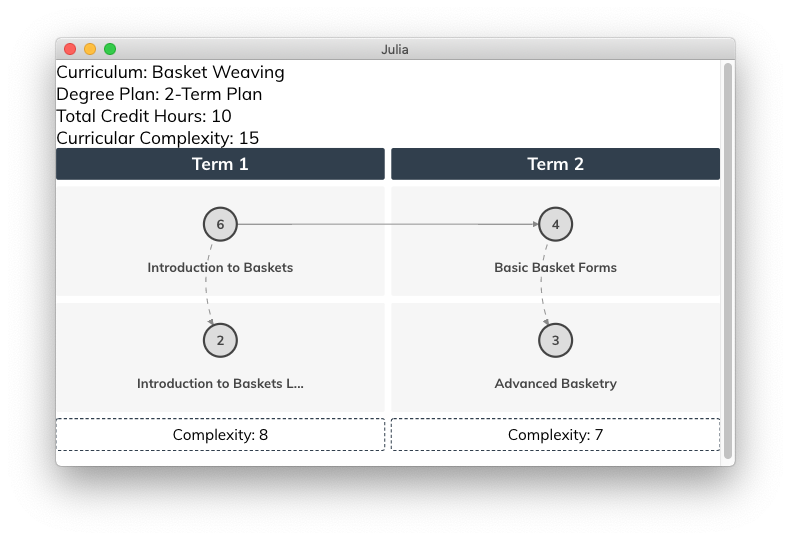

CurricularAnalytics.jl Data Types
This section describes the basic data types associated with the CurricularAnalytics.jl toolbox. These are used to construct courses (with associated learning outcomes), curricula and degree plans.
Courses
CurricularAnalytics.Course — TypeThe Course data type is used to represent a single course consisting of a given number of credit hours. To instantiate a Course use:
Course(name, credit_hours; <keyword arguments>)Arguments
Required:
name::AbstractString: the name of the course.credit_hours::int: the number of credit hours associated with the course.
Keyword:
prefix::AbstractString: the prefix associated with the course.num::AbstractString: the number associated with the course.institution:AbstractString: the name of the institution offering the course.canonical_name::AbstractString: the common name used for the course.
Examples:
julia> Course("Calculus with Applications", 4, prefix="MA", num="112", canonical_name="Calculus I")Once a course has been created, requisites may be added to it, or deleted from it, using the following functions.
CurricularAnalytics.add_requisite! — Functionadd_requisite!(rc, tc, requisite_type)Add course rc as a requisite, of type requisite_type, for target course tc.
Arguments
Required:
rc::AbstractCourse: requisite course.tc::AbstractCourse: target course, i.e., course for whichrcis a requisite.requisite_type::Requisite: requisite type.
Requisite types
One of the following requisite types must be specified for the requisite_type:
pre: a prerequisite course that must be passed beforetccan be attempted.co: a co-requisite course that may be taken before or at the same time astc.strict_co: a strict co-requisite course that must be taken at the same time astc.
add_requisite!([rc1, rc2, ...], tc, [requisite_type1, requisite_type2, ...])Add a collection of requisites to target course tc.
Arguments
Required:
rc::Array{AbstractCourse}: and array of requisite courses.tc::AbstractCourse: target course, i.e., course for whichrcis a requisite.requisite_type::Array{Requisite}: an array of requisite types.
Requisite types
The following requisite types may be specified for the requisite_type:
pre: a prerequisite course that must be passed beforetccan be attempted.co: a co-requisite course that may be taken before or at the same time astc.strict_co: a strict co-requisite course that must be taken at the same time astc.
CurricularAnalytics.delete_requisite! — Functiondelete_requisite!(rc, tc)Remove course rc as a requisite for target course tc. If rc is not an existing requisite for tc, an error is thrown.
Arguments
Required:
rc::AbstractCourse: requisite course.tc::AbstractCourse: target course, i.e., course for whichrcis a requisite.
Just like courses, learning outcomes can have requisite relationships between them.
Learning Outcomes
CurricularAnalytics.LearningOutcome — TypeThe LearningOutcome data type is used to associate a set of learning outcomes with a course or a curriculum (i.e., degree program). To instantiate a LearningOutcome use:
LearningOutcome(name, description, hours)Arguments
name::AbstractString: the name of the learning outcome.description::AbstractString: detailed description of the learning outcome.hours::int: number of class (contact) hours needed to attain the learning outcome.
Examples:
julia> LearningOutcome("M1", "Learner will demonstrate the ability to ...", 12)Curricula
To create a curriculum from a collection of courses, and their associated requisites, use:
CurricularAnalytics.Curriculum — TypeThe Curriculum data type is used to represent the collection of courses that must be be completed in order to earn a particualr degree. Thus, we use the terms curriculum and degree program synonymously. To instantiate a Curriculum use:
Curriculum(name, courses; <keyword arguments>)Arguments
Required:
name::AbstractString: the name of the curriculum.courses::Array{Course}: the collection of required courses that comprise the curriculum.
Keyword:
degree_type::AbstractString: the type of degree, e.g. BA, BBA, BSc, BEng, etc.institution:AbstractString: the name of the institution offering the curriculum.system_type::System: the type of system the institution uses, allowable types:semester(default),quarter.CIP::AbstractString: the Classification of Instructional Programs (CIP) code for the curriculum. See:https://nces.ed.gov/ipeds/cipcode
Examples:
julia> Curriculum("Biology", courses, institution="South Harmon Tech", degree_type=AS, CIP="26.0101")The following function can be used to ensure that a constructed curriculum is valid.
CurricularAnalytics.is_valid — Functionis_valid(c::Curriculum, errors::IOBuffer)Tests whether or not the curriculum graph $G_c$ associated with curriculum c is valid, i.e., whether or not it contains a requisite cycle, or requisites that cannot be satisfied. Returns a boolean value, with true indicating the curriculum is valid, and false indicating it is not.
If $G_c$ is not valid, the errors buffer. To view these errors, use:
julia> errors = IOBuffer()
julia> is_valid(c, errors)
julia> println(String(take!(errors)))A curriculum graph is not valid if it contains a directed cycle or unsatisfiable requisites; in this case it is not possible to complete the curriculum. For the case of unsatisfiable requistes, consider two courses $c_1$ and $c_2$, with $c_1$ a prerequisite for $c_2$. If a third course $c_3$ is a strict corequisite for $c_2$, as well as a requisite for $c_1$ (or a requisite for any course on a path leading to $c_2$), then the set of requisites cannot be satisfied.
is_valid(plan::DegreePlan, errors::IOBuffer)Tests whether or not the degree plan plan is valid. Returns a boolean value, with true indicating the degree plan is valid, and false indicating it is not.
If plan is not valid, the reason(s) why are written to the errors buffer. To view these reasons, use:
julia> errors = IOBuffer()
julia> is_valid(plan, errors)
julia> println(String(take!(errors)))There are three reasons why a degree plan might not be valid:
- Requisites not satsified : A prerequisite for a course occurs in a later term than the course itself.
- Incomplete plan : There are course in the curriculum not included in the degree plan.
- Redundant plan : The same course appears in the degree plan multiple times.
Determine whether or not a set of requirements contained in a requirements tree rooted at root has credit hour constraints that are possible to satisfy.
is_valid(root::RequirementSet, errors::IOBuffer)julia> errors = IOBuffer()
julia> is_valid(root, errors)
julia> println(String(take!(errors)))The credit hour constraints associated with particular set of requirements may be specified in a way that makes them impossible to satsify. This function searches for particular cases of this problem, and if found, reports them in an error message.
Terms
CurricularAnalytics.Term — TypeThe Term data type is used to represent a single term within a DegreePlan. To instantiate a Term use:
Term([c1, c2, ...])where c1, c2, ... are Course data objects
Degree Plans
To create a degree plan that satisfies the courses associated with a particular curriculum use:
CurricularAnalytics.DegreePlan — TypeThe DegreePlan data type is used to represent the collection of courses that must be be completed in order to earn a particualr degree. To instantiate a Curriculum use:
DegreePlan(name, curriculum, terms, additional_courses)Arguments
name::AbstractString: the name of the degree plan.curriculum::Curriculum: the curriculum the degree plan must satisfy.terms::Array{Term}: the arrangement of terms associated with the degree plan.additional_courses::Array{Course}: additional courses in the degree plan that are not a part of the curriculum. E.g., a prerequisite math class to the first required math class in the curriculum.
Examples:
julia> DegreePlan("Biology 4-year Degree Plan", curriculum, terms)The following function can be used to ensure that a constructed degree plan is valid.
Missing docstring for is_valid. Check Documenter's build log for details.
To find the term where a given course is located within a degree plan use:
CurricularAnalytics.find_term — Functionfind_term(plan::DegreePlan, course::Course)In degree plan plan, find the term in which course course appears. If course in not in the degree plan an error message is provided.
To see the terms and courses associated with a degree plan use:
CurricularAnalytics.print_plan — Functionprint_plan(plan::DegreePlan)Ugly print out of a degree plan to the Julia console.
The ability to create degree plans that satsify very "goodness" criteria is described in more detail in Creating Degree Plans.
A sophisticated visualization capability for viewing degree plans is described in Visualizing Curricula and Degree Plans.
